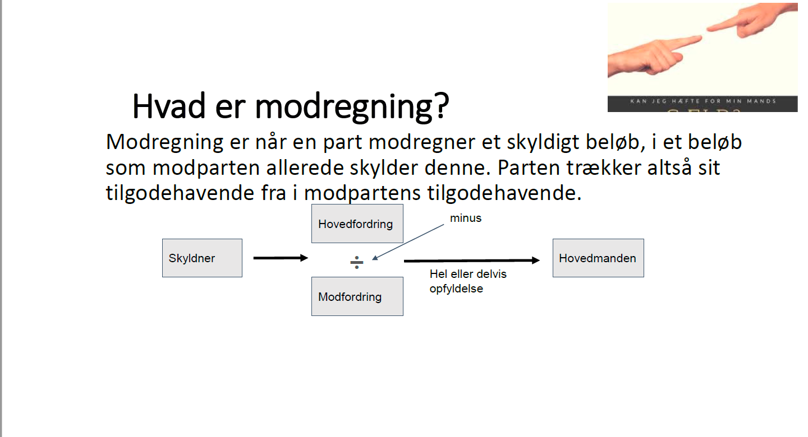

Kapitel 13 Ophør af fordringer
Som studerende skal du være særlig opmærksom på følgende problemstillinger ved gennemgangen af fordringer (krav) og deres ophør i forhold til eksamen, samt senere når du skal arbejde i den finansielle sektor:
Sondring mellem almindelige fordringer, simple gældsbreve og omsætningsgældsbreve – analog anvendelse af reglerne for simple gældsbreve jf. GBL § 26 på alm. fordringer (ved afprøvningen bør der være fokus på simple fordringer/gældsbreve og tinglyste negotiable dokumenter)
Sikringsakt
Fordringers ophør:
Forældelse Se forældelseslovens regler
Modregning – almindelige betingelser + GBL § 27 og 28
Betaling med frigørende virkning, GBL § 29 og 30
13.1 Modregningsadgang
Modregning er en måde at opfylde/afslutte krav på.
Modregning bringer krav til ophør i det omfang, kravene dækker hinanden.
Figur 13.1: Modkrav og hovedkrav, skyldner på hovedkravet Bonnie vil modregne

Se det gældende hovedprincip om modregningsadgang fra romerretten: **“inter easdem personas”*; modregning kan som udgangspunkt kun ske når hovedkrav og modkrav er mellem de samme personer.
Modregning gøres ved, at den ene parts krav fratrækkes den anden parts krav.
Modregning har karakter af betaling.
Modregning er en forenkling af betalingssystemet.
Ved modregning opgiver den ene part sit krav hos den anden part.
Men samtidig bringer han sin gæld til den anden til ophør.
Han får således lov til at beholde den ydelse, som han ellers skulle have betalt til opfyldelse af sin skyld.
Modregning gør ikke, at parterne slipper for at overholde reglerne i lovgivningen.
Lovgivningen om bogføring og anden lovgivning (beregning af moms osv.) skal naturligvis overholdes.
Modregning har også karakter af privat tvangsfuldbyrdelse.
Modregning kan nemlig ske, hvis den ene part ønsker det.
Der behøver ikke at foreligge en aftale mellem parterne eller et samtykke fra modparten.
Modregningen indebærer altså, at fordringen bliver opfyldt, selv om en part ikke kan eller vil betale.
Modregning sker ved, at den ene part afgiver en erklæring (modregningserklæring) om modregning til den anden.
I modregning gælder der et særligt sprogbrug af juridiske begreber:
*Modregneren: Den der ønsker at modregne og derfor afgiver en modregningserklæring.
Hovedmanden: Modtageren af modregningserklæringen.
Modfordringen: Modregnerens tilgodehavende hos den anden part.
Hovedfordringen: Modregnerens skyld til den anden part.
Konneksitet: Det betyder, at der er tale om krav, som har fælles oprindelse. Konneks anvendes om fordringer, der udspringer af samme retsforhold, dvs.at hovedkravet og modkravet udspringer af det samme retsforhold.
Fx, at forbrugeren skylder afdrag (hovedkravet) i forbindelse med køb af en bil, og at der er konstateret mangler ved bilen, som køberen vil modregne (modkravet) i de afdrag, der skyldes på bilen overfor sælgeren.
Der er udvidet adgang til modregning med konnekse modfordringer.
Se nedenfor de 4 betingelser for, at der kan foretages “tvungen ikke-konneks modregningsafgang”, dvs. at hovedkrav og modkrav ikke udspringer af det samme retsforhold fx. kreditkøb af en bil samt mangler ved købet af en anden bil.
Ved tvungen ikke-konneks modregning kan modregning ske, uden at der foreligger en aftale om modregning mellem parterne.
Tvungen ikke-konneks modregning iværksættes ved, at modregneren afgiver en modregningserklæring.
Modregningserklæringen har karakter af påbud til hovedmanden.
Han kan derfor ikke afvise erklæringen, og den har virkning, så snart den er kommet frem til ham.
Fordringer vedbliver således med at bestå med deres fulde beløb, indtil modregning er erklæret, og ophører først, når erklæringen er nået frem til hovedmanden.
13.1.1 Betingelser for tvungen ikke-konneks modregning
For at tvungen ikke-konneks modregning må finde sted, er der en række betingelser, der skal være opfyldte.
Disse betingelser skal alle være opfyldte på det tidspunkt, hvor den tvungne ikke-konnekse modregning iværksættes.
Betingelserne er følgende:
- Kravene er udjævnelige.
- Kravene er afviklingsmodne.
- Kravene er gensidige.
- Modkravet er retskraftigt.
- Ad. 1. Kravene til udjævnelighed
Betingelsen om udjævnelighed betyder, at kravene kan benyttes til korrekt opfyldelse af hinanden.
Betingelsen om udjævnelighed er opfyldt, når både hovedfordringen og modfordringen er pengefordringer.
Dvs. krav om “komputabel”; Sammenregnelig.
Det er en betingelse for modregning, at hovedfordring og modfordring er komputable, fx. 2 krav på penge.
Hovedkravet er penge og modkravet er penge.
Kravene behøver ikke at være lige store, for at tvungen modregning må gennemføres.
Blot kravene er delelige, må der modregnes over for en hovedfordring, der er større end modfordringen, og modregnes med en modfordring, der er større end hovedfordringen.
- Ad. 2. Kravene er afviklingsmodne
At kravene er afviklingsmodne betyder, at modfordringens forfaldstidspunkt er kommet, mens hovedfordringens frigørelsestidspunkt skal være kommet.
Forfaldstidspunktet er det tidspunkt, hvor kreditor kan kræve, at debitor betaler, hvad debitor skylder.
Frigørelsestidspunktet er det tidspunkt, hvor debitor har ret til at frigøre sig ved at betale, hvad debitor skylder.
Denne betingelse er begrundet i, at en kreditor kan kræve betaling, når forfaldstidspunktet er kommet, mens en debitor kan frigøre sig fra sin gæld, når frigørelsestidspunktet er kommet.
Med “forfaldstidspunkt” menes sidste rettidige betalingsdag, da betaling som udgangspunkt ikke må kræves før da.
- Ad. 3. Kravene er gensidige
Modregning må kun ske, hvor to personer (fysiske og/eller juridiske personer) har krav på hinanden, således at debitor efter den ene fordring er kreditor efter den anden fordring.
- Ad. 4. Modkravet er retskraftigt
At modkravet skal være retskraftigt betyder, at modfordringen ikke må være bortfaldet, fx ved forældelse" eller præklusion:
En ret kan ophøre ved præklusion, hvis retten ikke gøres gældende rettidigt fx en kreditors krav, når der indrykkes et proklama i et dødsbo.
Hvis modfordringen er bortfaldet, er modregning udelukket.
13.2 Ophør ved forældelse
Der bliver behandlet følgende vigtige emner vedrørende forældelse:
Hvorfor forældelsesregler.
Retsvirkningerne af forældelse.
Om forældelsesfrister i forældelsesloven.
Forældelsesfrister - pengelån, indlån, kaution.
Afbrydelse af forældelse.
Passivitetsgrundsætningen.
13.2.1 Hvorfor forældelsesregler
Forældelsesreglerne er nødvendige regler, der primært er til for at udelukke gamle krav, som det kan være svært at føre bevis for eksistensen af, eller krav, som de involverede parter havde indrettet sig på ikke længere eksisterede.
Uden forældelsesreglerne kunne der opstå mange uløselige, indgribende og urimelige tvister mellem mange parter.
De almindelige forældelsesregler er samlet i forældelsesloven, men der finder også en række forældelsesfrister vedrørende særlige retsforhold i andre love, fx i købeloven.
Forældelsesloven (FL; Lovbekendtgørelse nr. 1238 af 9. november 2015 om forældelse af fordringer), Se Lovsamlingen klik her!
Forældelsesloven omfatter:
Fordringer på penge eller andre ydelser, fx:
Krav på løn.
Krav på erstatning.
Krav efter en faktura.
Forældelsesloven omfatter ikke:
Tinglyste pantebreve.
Krav på andet end penge.
Særlige krav kan være forældet efter andre regler, fx købelovens reklamationsregler §§ 81 og 83.
Skyldner skal ikke betale, hvis kravet er forældet.
Forældelsesfristen løber fra det tidligste tidspunkt kreditor kunne kræve betaling:
Forfaldstidspunkt, der hvor skyldner skal betale fordringen.
Misligholdelsestidspunkt, hvis en kontrakt bliver misligholdt.
Skadestidspunkt, hvis kravet opstår som følge af erstatningsansvar for en skade.
13.2.2 Retsvirkningerne af forældelse
Når forældelsen faktisk indtræder, ophører forpligtelsen helt med at eksistere – uanset om de involverede parter har kendskab til fordringen eller ej, eller om de med vilje ikke har betalt.
Det er heller ikke nødvendigt at meddele modparten, at kravet er forældet. Man kan forholde sig passiv.
Renter mv. af en forældet fordring bliver forældede samtidig med selve fordringen, uanset hvornår de er opstået.
Det er i mange situationer muligt at aftale, at forældelsen ikke skal indtræde.
Dog kan forældelsesfristerne i forældelsesloven ikke på forhånd fraviges til skade for en forbruger.
13.2.3 Om forældelsesfrister i forældelsesloven
Forældelseslovens opbygning er lavet sådan, at der er en almindelig forældelsesfrist på 3 år (den relative forældelsesfrist).
Det fremgår af forældelseslovens § 3, stk. 1.
Figur 13.2: Forældelsesfrister i forældelsesloven
Denne regel er dog suppleret med en lang række andre frister og udsættelsesmuligheder, der gælder for særlige situationer og særlige retsforhold.
Alle fristerne i forældelsesloven skal som hovedregel regnes fra det tidligste tidspunkt, hvor fordringshaveren kunne kræve fordringen opfyldt.
Det følger af forældelseslovens § 2, som der dog også er undtagelser til.
Forældelsesfrister (se tabellen nedenfor)
| Forældelse 3 år HR alle krav fx. | Forældelse 10 år, når der er en undtagelse fx. |
| Mangler fast ejendom | Gældsbrev |
| Renter | Frivilligt forlig |
| Rykkergebyrer | Dom |
| Overtræk kontokort | Pengelån |
| Rådgiveransvar | Ubevilliget overtræk Bank |
| Kassekredit indenfor maksimum |
13.2.4 Forældelsesfrister - pengelån, indlån og kaution
Forældelsesloven indeholder særlige frister for visse fordringer, der har særlig interesse for pengeinstitutter og andre långivere.
For pengelån og overtræk er forældelsesfristen 10 år. For renter og gebyrer heraf dog kun 3 år, jf. forældelseslovens § 6.
For indlån i pengeinstitutter er forældelsesfristen 20 år fra seneste kontobevægelse jf. forældelseslovens § 7.
Når en fordring er sikret ved kaution, forældes kautionen ligesom den fordring, der kautioneres for. Det vil sige, at kaution for pengelån forældes efter 10 år.
HR: Alle krav forældes efter 3 år, jf. FL § 3, stk. 1, fx:
Krav på renter og rykkergebyrer.
Krav som følge af mangler ved fast ejendom.
Overtræk på et kontokort.
U: Nogle krav forældes efter 10 år, fx:
Underskrevet gældsbrev.
Frivilligt forlig.
Dom.
Pengelån.
13.2.5 Afbrydelse af forældelse
I forældelseslovens kapitel 5 findes der nogle regler om, hvordan forældelsen kan afbrydes.
Det vil sige, at fristen kan komme til at løbe længere end det umiddelbare udgangspunkt.
Der skal sondres mellem egentlig afbrydelse og foreløbig afbrydelse.
Egentlig afbrydelse af en forældelsesfrist kan ske ved anerkendelse af gælden, eller ved at fordringshaverne foranstalter tvangsinddrivelse.
Konsekvensen af afbrydelsen er, at fristen ikke løber længere.
Når fristen afbrydes, starter den forfra.
Afbrydelse sker når.
Skyldner erkender at skylde pengene, fx når:
Skyldner betaler renter og afdrag.
Underskriver et frivilligt forlig.
Eller accepterer på anden måde.
Vil skyldner ikke erkende gælden, må skyldner foretage retslige skridt, fx:
Forfølge krav i Fogedretten.
Klage til et privat godkendt tvistløsningsorgan (klage- og ankenævn fx. forsikringsankenævnet og Det Finansielle Ankenævn).
Suspenderet forældelsesfrist:
Betyder at fristen løber først fra et senere tidspunkt.
Hvis kreditor ikke kendte til kravet (fx fordi kreditor ikke er klar over, at der er en skade).
Hvis kreditor ikke kendte til skyldner (fx fordi kreditor ikke ved, hvem der har ansvar for skaden).
Fristen kan ikke suspenderes ud over de lange frister på 10 eller 30 år (miljø- og personskader).
13.2.6 Passivitetsgrundsætning
Der gælder en almindelig uskreven passivitetsgrundsætning i dansk ret.
Passivitetsgrundsætninger hviler på spørgsmålet om, hvorvidt kreditor ved at forholde sig passiv i en længere periode har givet debitor en berettiget forventning om, at kreditor ikke har til hensigt at forfølge sit krav.
Hvis man som debitor vil påberåbe sig en ulovfæstet passivitetsgrundsætning som grundlag for, at kreditor ikke længere har en ret til at kræve betaling, skal der udover at være passeret en længere rum tid også være nogle andre forhold der gør, at debitor ikke længere regnede med, at kreditor havde til hensigt at forfølge sit krav.
Er debitor i god tro?
Skyldes vildfarelsen vedrørende betaling overvejende kreditors forhold?
Er fejlen opdaget og rettet hurtigt?
Sådanne nogle andre forhold skal vurderes ud fra den konkrete situation.
Det kan således ikke udelukkes, at domstolene i en konkret situation finder, at kreditor har fortabt sin ret til at kræve betaling på baggrund af passivitetsbetragtninger.
Video Forældelse af erstatningskrav
Video Forældelsesfrister ved gæld
Video Gode råd om gæld og om forældelse
Video Få styr på sin gæld, herunder omkostninger og forældelse
13.3 Deponering
Aftalt deponering eller efter deponeringsloven (Lovbekendtgørelse nr. 339 2. april 2014 om skyldneres ret til at frigøre sig ved deponering).
Deponeringsloven vedrører en debitors mulighed for med frigørende virkning at deponere sin ydelse i form af penge eller værdipapirer med den virkning, at debitor stilles, som om han havde opfyldt sin forpligtelse.
Deponering betyder, at debitor betaler til en konto i en bank med frigørende virkning
Deponering kan ske, når:
Debitor ikke kan betale på grund af kreditors forhold, fx hvis kreditor er væk.
Kreditor ikke vil opfylde debitors betingelser, fx udlevere en kvittering.
Det er uvist, hvem der er rette kreditor.
Deponering kan ikke ske i andre tilfælde - heller ikke fx hvis debitor er utilfreds med huslejens størrelse.
Lidt begreber:
“Deponering”: En betaling, som er betinget af, at visse krav bliver opfyldt.
“Depositar”: Den person, der påtager sig at opbevare en værdi (ting såvel som penge) for en anden. Depositaren forpligter sig samtidig til at tilbagelevere den samme ting.